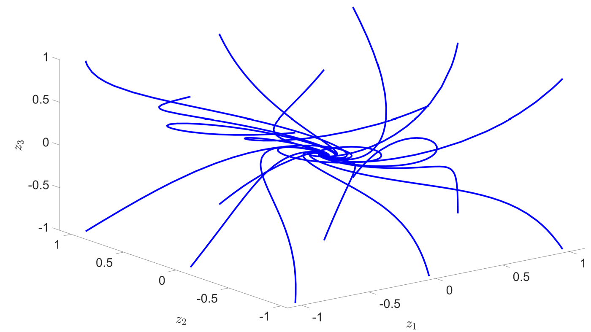
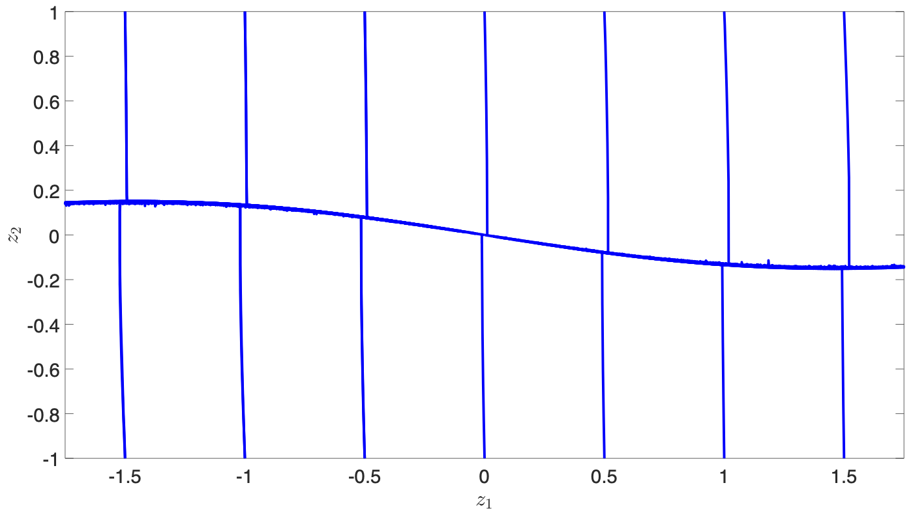

Designing Rational Neural Network Controllers
GitHub, PaperMotivation
- Neural networks have been shown to be effective as controllers in feedback systems.
- Current approaches use existing neural network architectures taken from traditional machine learning tasks.
- Neural networks with rational activation functions have been successful in previous application areas.
Contribution
- Introduce novel rational activation functions for traditional “sigmoid” and “tanh” activation functions.
- Propose new rational neural network structure to preserve convexity in optimisation problem when designing a controller with stability guarantees.
A comparison between the traditional tanh(x) activation function and the Rtanh(x) function which is a new rational approximation.
Analysis
- Show the benefit of using rational activation functions to avoid use of highly non-linear activation functions.
- Formulated convex method to find a stabilising controller using Sum of Squares optimisation.
Results
- Numerical examples demonstrate that this approach can successfully find stabilising rational neural network controllers.
- Effectively provides controllers for systems with non-linear plants, noise and parametric uncertainty.

Diagram showing the region of attraction for an inverted pendulum controlled by a neural network, where the tanh activation function is replaced with the Rtanh function.
Plot showing the trajectories of the system states for a three dimensional non-linear system which is controlled by a rational neural network using this method.
Plot showing the trajectories of the system states for a non-linear inverted pendulum which is controlled by a rational neural network using this method.